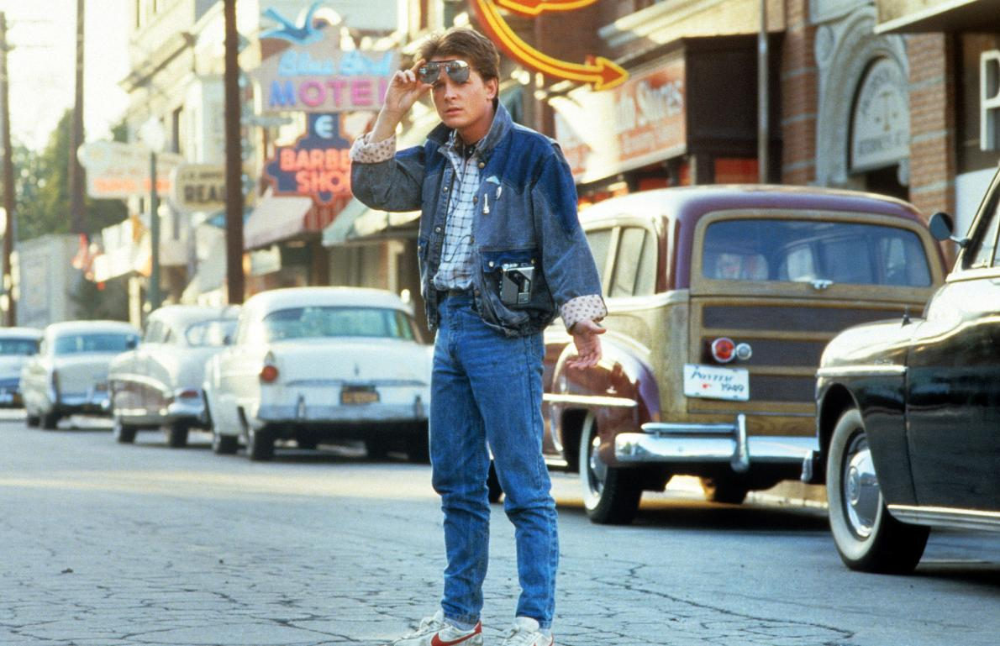
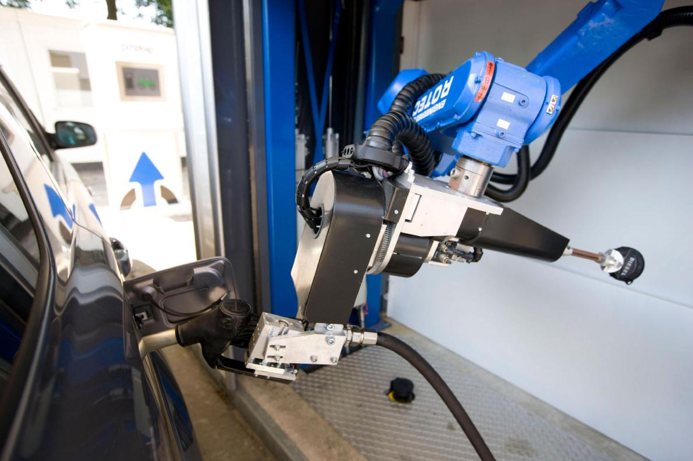

Marty McFly Time-Traveled to This Week. Did 'Back to the Future' Get It Right?
The 1989 movie imagined a future that, in some cases, became reality.

Michael J. Fox's character, Marty McFly, traveled from the 1980s to a future
where energy is easy and cheap.
It might feel like just yesterday to some, but the movie
'Back to the Future II'
came out nearly 26 years ago. Marty McFly set off with Doc Brown in his DeLorean
time machine, bound for the future: October 21, 2015, to be exact.
Now we've all caught up to them, and so has some of the technology the film
envisioned: Hoverboards, for example. (See what it's like to ride one.) Though
they're still in the early stages, the company that makes them is releasing an upgraded
version to mark the big date. And a documentary about the comic sci-fi trilogy's impact
called Back in Time will premiere online (see a trailer for the movie below).
The Hollywood depiction of 2015 was filled with cheap and easy energy. While
that's still far from reality, a few things came close to the mark.
Hoverboards
Today's hoverboard isn't quite as effortless yet as the airborne skateboard
that Michael J. Fox's character commandeered in the movie. But Los Gatos,
California-based Arx Pax has big aspirations for its magnetism-driven one
the Hendo.
Former pro skateboarder Tony Hawk collaborated on the latest iteration,
which comes closer to its wheeled counterpart than the first one. (Hawk
appeared in a star-studded viral video that seemed to herald the arrival of
the ultimate fantasy hoverboard, until it was revealed to be a gag orchestrated
by online comedy video site Funny or Die.)
Screenwriter Bob Gale, who invented the fictional hoverboard for the movie,
has tried out the real thing. «It was a total high riding the Hendo because it
embodied what we were trying to create in 1989,» Gale says.
Inventor Greg Henderson says the true innovation is not the
attention-grabbing hoverboard, but his patented Magnetic Field Architecture
technology, which he says has disruptive potential to slash energy
consumption and boost disaster resilience. The new approach to magnetism,
he said, «is the easiest, most efficient way to separate an object from
the Earth and to overcome friction.»
Friction is one of the Earth's most energy-costly forces, one reason that
less than 30 percent of the energy from the fuel you put in your gas tank
gets used to move your car down the road.
Flying Cars
«Roads? Where we're going, we don't need roads,» says Doc Brown in
Back to the Future's seminal kicker line.
Alas, civilization is still tethered to highways and byways that
are growing more congested daily.
Jack Langelaan, associate professor of aerospace engineering at
Pennsylvania State University, says it's not surprising that the flying car
technology has been slow to arrive, since engineering requirements
for road and air travel are utterly different. «The big danger is that
because the 'flying car' is a hybrid, you could end up making something
that's both a bad car and a bad airplane,» he says.
Langelaan was part of a team that won a 2011 challenge, sponsored by
Google and hosted by NASA, by designing an electric-powered four-seat
aircraft and flying it 200 miles (322 kilometers) at 107 miles (172 kilometers)
per hour, with an average fuel efficiency of 403 passenger miles
(648.5 kilometers) per gallon.
Carl Dietrich, co-founder and chief executive of Terrafugia, a leader in the
chase to market a flying car, says its ultimate aim is anyone-can-drive
automation. (See pictures of Terrafugia's car.)
«In my opinion, it's the ultimate incarnation of personal
freedom,» said Dietrich. «That's what made the car so popular.
The flying car is the next level. I think we'll continue to dream about
it until we have it.»

A Dutch company developed TankPitstop, an automated fuel fill-up robot
(above). A robotic system for hands-free fill-ups, introduced by Husky,
is being developed in the U.S.
Roads? Where we're going, we don't need roads!
Doc Brown
Automated Fueling
While cars stay earthbound for the foreseeable future, one of the advances
that wowed Marty McFly may actually arrive by 2015.
A robotic fueling system introduced by Husky, a leading maker of fuel nozzles
and accessories, is to be rolled out in the U.S. Midwest within the year.
The fuel pump doesn't talk or wheel around your car, checking systems, like
the one in the movie's flying car service station. But a compact flexible
nozzle extends to open a car's gas tank and offer a hands-free fill-up.
Husky, a 66-year-old Pacific, Missouri, company, teamed up with Stockholm-based
start-up firm Fuelmatics Systems to create the product, unveiled
at last year's National Association of Convenience Stores trade show.
Robotic fueling is, indeed, all about convenience, said Sten Corfitsen,
founder and chief executive of Fuelmatics, in a demo video that Husky has
posted on Youtube. «It's cleaner. You don't have to take the dirty
nozzle,» he said. «It's more safe at nighttime. Maybe you don't
like to step out of the car.»
Garbage to Fuel
In Back to the Future, Doc Brown powers his DeLorean time-travel machine with
banana peels, leftover beer, and Pepsi scavenged from garbage. Of course,
he has the help of a «Mr. Fusion» home energy reactor.
The type of nuclear reaction that generates the sun's energy is nowhere near
ready to be harnessed for the home. Scientists have had trouble enough
achieving ignition of potentially plentiful, carbon-free fusion in
sophisticated labs. (Read more about the challenges for fusion energy.)
But technology to turn garbage into methane fuel has been commercially
available for 30 years, said Kristi Moriarty, a senior analyst at the
U.S. Department of Energy's National Renewable Energy Laboratory.
It's called anaerobic digestion, or the use of microorganisms to break down
organic material in the absence of oxygen.
Kristianstad, Sweden, one of Europe's major agricultural centers,
processes «biogas» from pork offal, household food scraps,
and other waste. The city uses the fuel to generate electricity and heat,
and to fill up vehicles such as municipal garbage trucks and
buses—enough to replace 1.8 million gallons (700,000 liters) of diesel fuel each
year.
In the United States, the Altamont landfill in California converts garbage
into 13,000 gallons (49,210 liters) of liquefied natural gas daily to fuel
the region's 300 trash collection vehicles.
Moriarty said the city-garbage-to-city-fuel loop makes sense because it brings
efficiency to the biogas process, but it is still relatively expensive
and not widely used.
But in many parts of the developing world, garbage-to-energy makes economic
sense. For example, Moriarty and colleagues found a planned project to turn
palm-oil processing waste into biogas in Muaro Jambi, Indonesia,
would garner a huge return on investment. The fuel would be sorely needed
by villagers, expensive, dirty petroleum diesel generators for power.
For such energy-poor communities with degradable waste at hand, biogas
«really is a win-win,» said Moriarty.
Doc Brown himself couldn't have summoned more enthusiasm for the possibilities
of science. But the real energy innovators of 2015 have goals that make time
travel seem trite.
The flying car is the next level. I think we'll continue to dream about
it until we have it.
Carl Dietrich